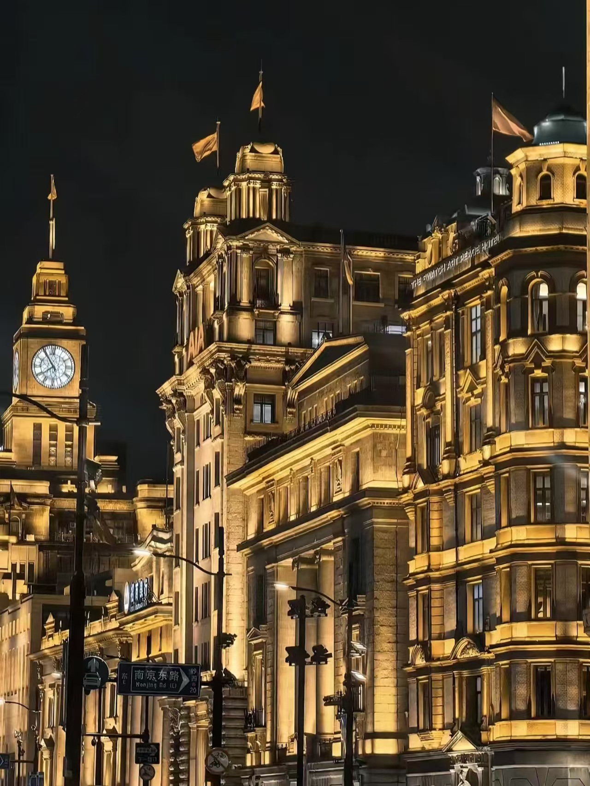
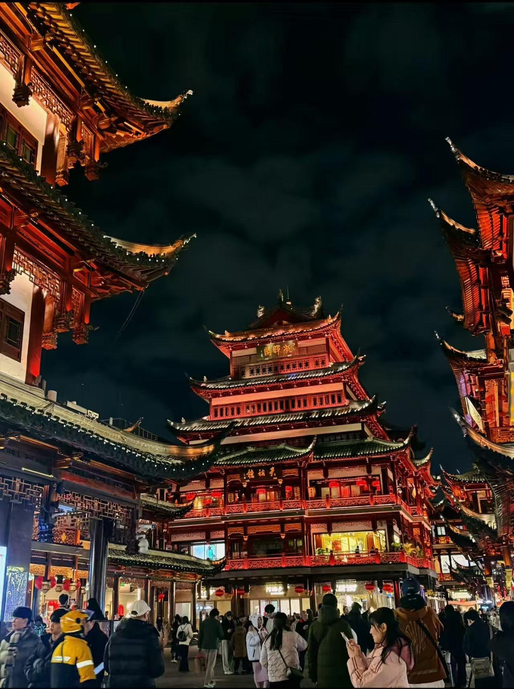
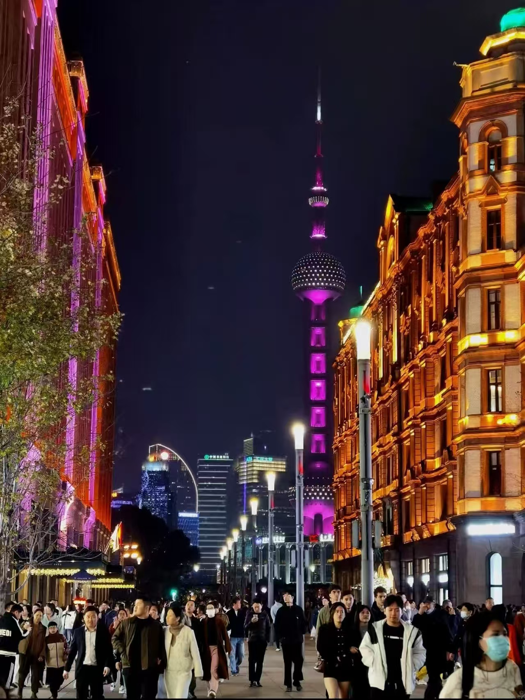
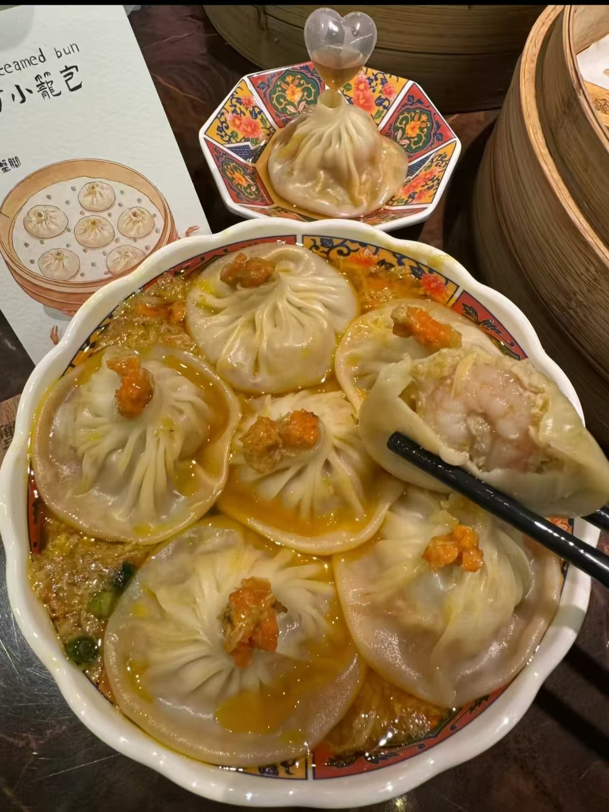

Section 01
A City of Contrast
Few cities present such a striking dialogue between past and future. Shanghai offers a visual and emotional experience built on contrast, balance, and momentum.
Historic elegance beside futuristic ambition
Along the Bund, grand European-style facades reflect Shanghai's layered international history. Across the Huangpu River, Lujiazui rises with glass towers, digital screens, and a skyline that feels unmistakably forward-looking.
This visual tension is part of the city's identity. Shanghai feels refined, energetic, and constantly in motion, inviting visitors to experience both memory and modernity in a single view.
Section 02
Culture and Heritage
Behind the skyline, Shanghai preserves a rich cultural character through architecture, gardens, neighborhoods, and the rhythm of everyday life.
Spaces that carry memory
Yuyuan Garden reveals a quieter side of the city, where classical design, carved details, and traditional spatial harmony create a calm contrast to the surrounding urban scale.
In older neighborhoods and creative lanes, visitors can still sense the spirit of Shanghai through street texture, local shops, and the continued presence of daily cultural life.

Section 03
Experience the Energy
Shanghai moves with intensity. From busy shopping districts to night views and entertainment spaces, the city delivers a strong sense of momentum from morning to midnight.

A city that never loses speed
Whether exploring a world-class theme park, walking through illuminated commercial streets, or taking in panoramic views from a tower, visitors quickly feel the city's vitality.
Shanghai offers excitement without feeling one-dimensional. Its energy is not only visual, but also social, creative, and deeply connected to the city's ambition.
Section 04
Taste Shanghai
Food is one of the most immediate ways to understand the city. Shanghai's cuisine combines comfort, craftsmanship, and a strong local identity.

Soup Dumplings
Delicate wrappers, rich filling, and warm broth create one of Shanghai's most iconic culinary experiences.
Pan-Fried Buns
Crisp on the outside and juicy inside, these buns represent the city's love for texture and flavor.
Local Character
From refined dishes to casual snacks, the food scene reflects a balance of tradition, warmth, and everyday culture.
Shanghai is more than a destination
It is a layered urban experience shaped by architecture, movement, memory, and taste. In Shanghai, every district reveals a different rhythm, and every journey offers a new perspective on the city.